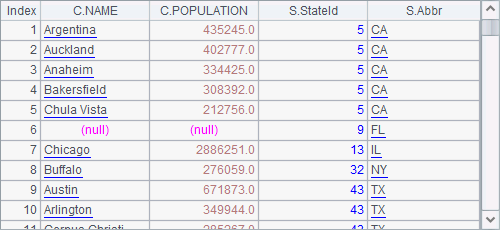
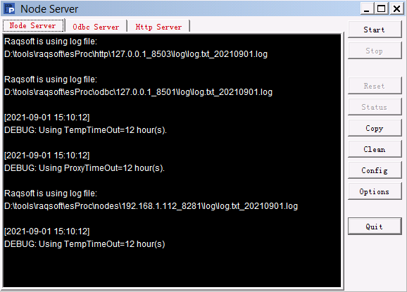
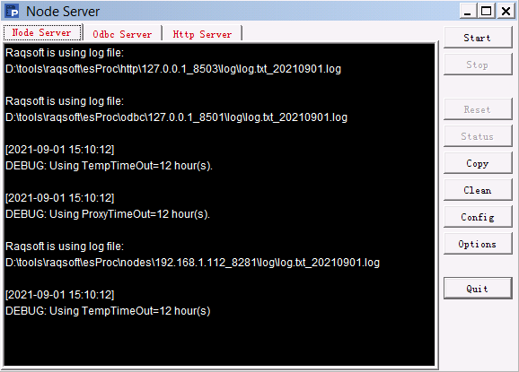

8.2.2 Performance advantage of multithreading
It appears that the execution of multithreaded code is similar to that of the loop code. But why multithreading is better? The following comparison between them gives the answer:
|
|
A |
B |
|
1 |
=file("PersonnelInfo.txt") |
|
|
2 |
=now() |
|
|
3 |
fork to(4) |
=A1.import@t(;A3:4) |
|
4 |
|
return B3.select(City=="San Diego") |
|
5 |
=A3.conj() |
=interval@ms(A2,now()) |
|
6 |
|
|
|
7 |
=now() |
|
|
8 |
for 4 |
=A1.import@t(;A8:4) |
|
9 |
|
>A10=A10|B8.select(City=="San Diego") |
|
10 |
[] |
=interval@ms(A7,now()) |
This example finds employees coming from San Diego from the text file PersonnelInfo.txt. The 2nd to the 5th lines use multithreading and from the 7th to the 10th lines run a loop. Both B3 and B8 import data by segment. Note that fork to(4) cannot be simplified for multithreaded execution. We get the same results in A5 and A10:

B5 and B10 time the two methods as they complete their computations
 

The multithreading takes less time than the loop takes thanks to a better utilization of CPU.